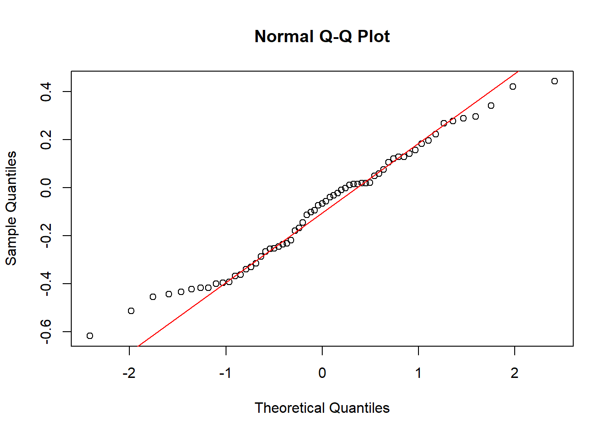

Chapter 5 Results
5.1 The correlation between latitude and year.
In order to find out the correlation between latitude and year, we need to purge some data whose latitude and year may not be relative. For instance, this is one of species called Utricularia dichotoma, the correlation coefficient between latitude and year is very small.
## [1] -0.2643478The scatter plot of its latitude and year seems messy. It is hard to describe the correlation between them. The reason why it happens is probably wrong records or the characteristic of plants. Utricularia dichotoma usually grows in wet locations and the moisture must be more important than temperature to the living of the species causing the mess of the scatter plot. Therefore, if the correlation coefficient is smaller than 0.3, we think no correlation exists.
We calculate the correlation coefficient of latitude and year of each species, and choose its absolute value which is not less than 0.3. There are 19 species met the condition. Here are the species, correlation coefficients and slopes.
## species corr slope
## 1 Dodonaea viscosa -0.6164304 -0.11727618
## 2 Senna artemisioides 0.4211296 0.05817406
## 3 Fimbristylis dichotoma 0.4434433 0.11950931
## 4 Phyllanthus virgatus 0.3432119 0.09504150
## 5 Acacia stenophylla -0.4208420 -0.11654206
## 6 Eucalyptus viridis -0.4329529 -0.09038205
## 7 Chenopodium spinescens -0.4545116 -0.10070991
## 8 Acacia longifolia -0.3958642 -0.01009835
## 9 Acacia floribunda -0.3909243 -0.06952318
## 10 Microtis unifolia -0.3142659 -0.04972729
## 11 Eucalyptus leucoxylon -0.5130337 -0.02620439
## 12 Grevillea rosmarinifolia -0.4161934 -0.02937272
## 13 Leptospermum laevigatum -0.3984328 -0.01405949
## 14 Acacia sophorae -0.3616717 -0.04643329
## 15 Melaleuca decussata -0.3287825 -0.01057844
## 16 Melaleuca armillaris -0.3670337 -0.01799621
## 17 Acacia provincialis -0.4431635 -0.01237274
## 18 Acacia pravissima -0.4170265 -0.01556202
## 19 Dodonaea procumbens -0.3396470 -0.01255465Observing the table, we can find that there are 3 species have positive correlation coefficients and 16 species have negative ones. It is worth noting that all latitudes are smaller than 0 since Australia is located in the southern hemisphere. Therefore, the negative correlation means the latitude gets higher as years pass. We show the correlation between latitude and years among 63 species as follows. The result is that about 70% of the species have no correlation between latitude and year. Nearly 24% of the species have negative correlations and 6% of the species have positive ones.
 We are interested in whether the changes of latitude are significant. The null hypothesis is that the correlation subjects to the normal distribution. Q-Q plot, density curve and Shapiro Wilk test result are presented. We can find that since p-value is very large, it does subject to the normal distribution, which means that the changes of latitude are minor. But we still find that the density curve leans to left a little bit, which means the latitude has a tendency to get higher.
We are interested in whether the changes of latitude are significant. The null hypothesis is that the correlation subjects to the normal distribution. Q-Q plot, density curve and Shapiro Wilk test result are presented. We can find that since p-value is very large, it does subject to the normal distribution, which means that the changes of latitude are minor. But we still find that the density curve leans to left a little bit, which means the latitude has a tendency to get higher.
##
## Shapiro-Wilk normality test
##
## data: all_la_y_corr$corr
## W = 0.97777, p-value = 0.3107We are also interested in different correlations in different class: Liliopsida and Magnoliopsida. We can see that the latitudes of Magnoliosida plants are more likely get higher. And Liliopsida plants do not have any correlation between latitudes and years.

5.2 The correlation between elevation and year.
We do the same thing to analyze the correlation between elevation and year. The result is that about 62% of the species have no correlation. Around 25% of the species have positive correlations and 12.7% of the species have negative ones.
We also present the Q-Q plot, density curve and Shapiro Wilk test result to show whether the correlation subject to normal distribution. At 10 percent level of significance, we can reject the null hypothesis. It means that the elevation does change in the last 50 years. We can notice that the density curve leans to left, which means that the elevation has a tendency to get higher.
##
## Shapiro-Wilk normality test
##
## data: all_ele_y_corr$corr
## W = 0.9655, p-value = 0.07442Different correlations in different class are also presented as follows. The elevations of Liliopsida plants are more likely get higher as years pass. The Magnoliopsida are less likely to have such coorelations.
Result:
The latitude of occurrences of Australia Magnoliopsida plants in the last 50 years has a tendency to get higher, but the changes are minor.
The elevation of occurrences of Australia Liliopsida plants in the last 50 years has a tendency to become higher and the changes are significant to some extent.